Introduction to Plotting in Python
Goals
- Understand the difference between imperative (
matplotlib) and declarative (seaborn) plotting, and when to use each. - Practice plotting with three basic visualizations: the histogram, the boxplot, and the scatterplot.
- Understand visualization as a tool for identifying structure.
- Recognize forms in which Simpson’s paradox can manifest.
Overview
matplotlibis a Python library for an imperative programming approach to plotting.- The user is responsible for instructing the computer how to build a plot using the library’s primitives.
- Highly flexible, but really verbose code.
matplotlibis a massive library. We typically only work withmatplotlib.pyplot.- Canonical abbreviation:
plt.
seabornis built onmatplotlibto support a declarative programming approach to plotting.- The user instructs the computer what to build using the library’s primitives.
- We don’t see the details (initialize the
FigureandAxis…), but lose some flexibility. - Canonical abbreviation:
sns.
For our purposes, seaborn is the most useful tool. Just keep in mind that matplotlib is the engine that makes the clean seaborn interface possible. We may need to create our own custom interfaces on data analysis projects.
Dataset
We’ll continue to explore the Palmer Penguins data. Here we define a default style and fix the penguin colors to specific values. These colors should be friendly to different forms of colorblindness.
penguins = pd.read_csv(os.path.join("assets", "penguins.csv"))
penguins = penguins.dropna(subset=["body_mass_g"])
# COLORS is a 'constant', so I prefer to use uppercase
# to distinguish this variable name from others I might use
# in a quick-prototyping context
COLORS = {"Adelie": "#EA9839", "Chinstrap": "#984AE5", "Gentoo": "#469093"}
sns.set_theme(style="whitegrid")Basic Elements
A matplotlib figure has two parts:
- a figure (the canvas) and,
- one or more axes (the panels with a coordinate system on them).
The general workflow is:
- Create both objects first.
- Draw on individual axes as needed (often using a loop).
- Add any annotations like axis labels, titles, or legends. Usually coupled with drawing on axes.
The matplotlib documentation has an excellent quick start guide to help you become familiar with the basic elements.
# INITIALIZE: Lots of ways to do this.
fig, ax = plt.subplots(nrows = 1, ncols = 1, figsize=(6, 4))
# DRAW: Generally use NumPy arrays or Pandas Series/DataFrames as figure data.
ax.scatter(penguins["flipper_length_mm"], penguins["body_mass_g"], alpha=0.6)
# ANNOTATE: Provide the reader with helpful context
ax.set_xlabel("Flipper length (mm)")
ax.set_ylabel("Body mass (g)")
ax.set_title("Heavier penguins have longer flippers")
ax.annotate("alpha = 0.6", xy = (180, 6000))
# Nothing is displayed until you request it.
plt.show()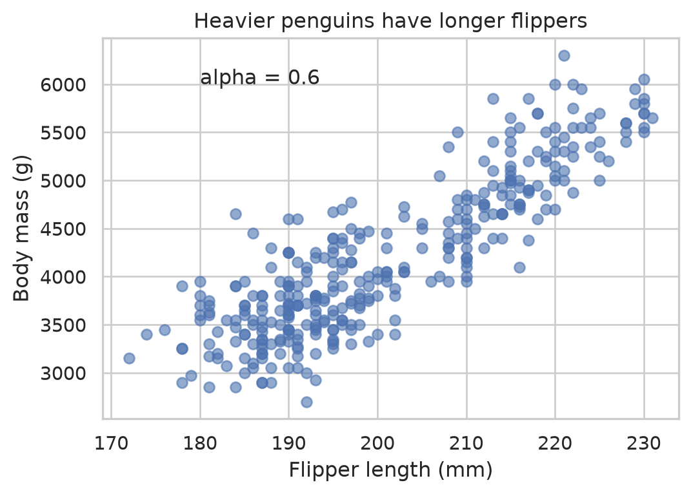
alpha=0.6makes points partly transparent, so overlapping points are visible.- Label your axes with units (if relevant). Give your plots an informative title.
- You can also add text annotations with
.annotate(). Notice that the coordinates are based on the data values.
Histograms
A histogram partitions numeric data into bins and counts how many observations fall in each. This allows us to visualize the distribution of a single variable within our data.
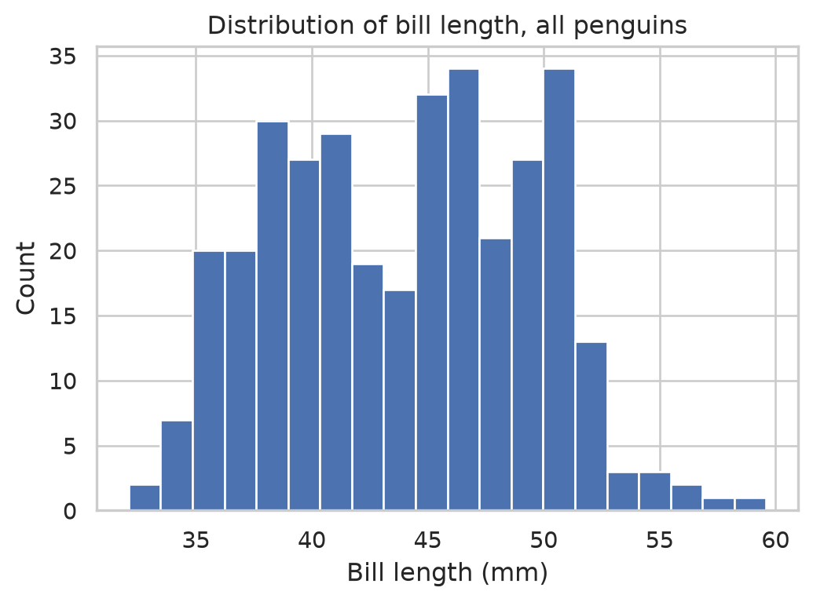
The number of bins is a choice, and it changes what you see:
# INITIALIZE
fig, axes = plt.subplots(1, 3, figsize=(11, 3.2), sharey=False)
for ax, bins in zip(axes, [4, 20, 80]):
# DRAW
ax.hist(penguins["bill_length_mm"], bins=bins, edgecolor="white")
# ANNOTATE
ax.set_title(f"{bins} bins")
ax.set_xlabel("Bill length (mm)")
# This is helpful to eliminate extra padding/spacing at the end.
fig.tight_layout()
plt.show()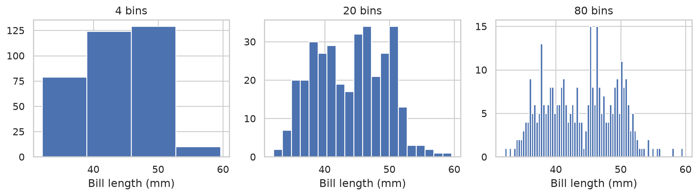
- Too few bins: Each bin captures a wide range so we miss small changes in the shape of the data’s distribution.
- Too many bins: Each bin tends to capture only a few values and gives the perception of highly complex distributional pattern.
- Examine your assumptions as you calibrate the bins.
- Example: Do we believe there are several distinct modes? Or only a few?
- Example: Is the data symmetric? Or is it skewed in one direction?
- How does your perception change your answers to these questions as you change the bin number?
- You may need to experiment with a few values.
- Make the computer work for you. Our basic
forloop above lets us easily explore different values. - It’s useful to write functions for specific plots so it works well in these kinds of loops.
- Make the computer work for you. Our basic
- Can also provide a
strvalue to apply different heuristics in selecting the number of bins:fd: Freedman-Diaconis rule.sturges: Sturges’ rule.
seaborn version
Let’s add the color variable. seaborn provides flexibility in how we specify a figure.
datakeyword: Provide a source for information.xkeyword: Specify what information is mapped to the \(x\)-axis.huekeyword: Specify what information is mapped to distinct colors. Needs categorical data.- Can also use arrays as in
matplotlib.
# INITIALIZE
fig, axes = plt.subplots(1, 2, figsize=(11, 4), sharey=True)
# FIGURE 1: All penguins
sns.histplot(data = penguins, x = "bill_length_mm", bins = 25, ax = axes[0])
axes[0].set_title("All penguins")
# FIGURE 2: Bill Length (mm) by Species
sns.histplot(data = penguins, x = "bill_length_mm", hue = "species",
hue_order = list(COLORS),
palette = COLORS,
bins = 25,
multiple = "stack",
ax = axes[1]
)
axes[1].set_title("Colored by species")
for ax in axes:
ax.set_xlabel("Bill length (mm)")
fig.tight_layout()
plt.show()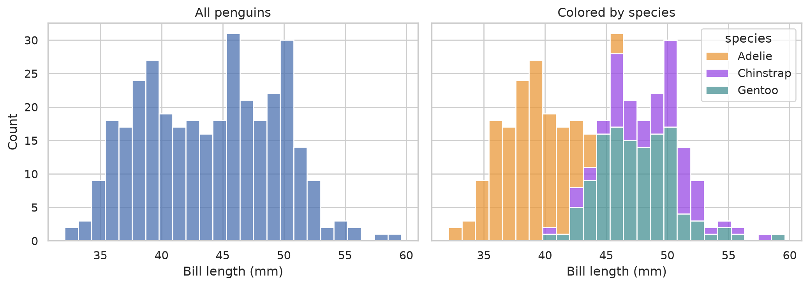
- Left: “Wide” distribution. Possible in principle, but the apparent peaks suggest additional structure.
- Right: Each species has its own distribution with different centers and widths.
- The stacked format is used for convenience here. Can hide information; e.g. how wide is the Adelie distribution?
- How would you recover the picture on the right if you did not have the
specieslabels?
Boxplots
A boxplot summarizes a variable’s distribution with a few informative statistics. This is potentially richer than a table, and can be useful in comparing groups. Use this plot type only when it is actually more informative than the corresponding table!
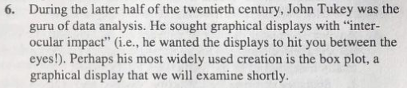
General idea:
- \(x\)-axis is used to convey information about categorical variable used to group numeric data.
- \(y\)-axis conveys the numeric variable’s information.
- In principle, you can swap \(x\) and \(y\) axis. Use whatever is easiest to read.
The descriptive statistics conveyed by a boxplot are
- a measure of location or center,
- a measure of deviation or spread, and
- skewness, through the symmetry/asymmetry of quartiles.
seaborn version
fig, ax = plt.subplots(figsize=(6, 4))
sns.boxplot(data = penguins, x = "species", y = "body_mass_g",
order = list(COLORS), # Ordered list specifying order along x-axis
hue = "species",
hue_order = list(COLORS), # Same idea as `order`
palette = COLORS,
legend = False, # This would be redundant. Set it to `True` to see why.
ax = ax
)
ax.set_xlabel("Species")
ax.set_ylabel("Body mass (g)")
ax.set_title("Body mass by species")
plt.show()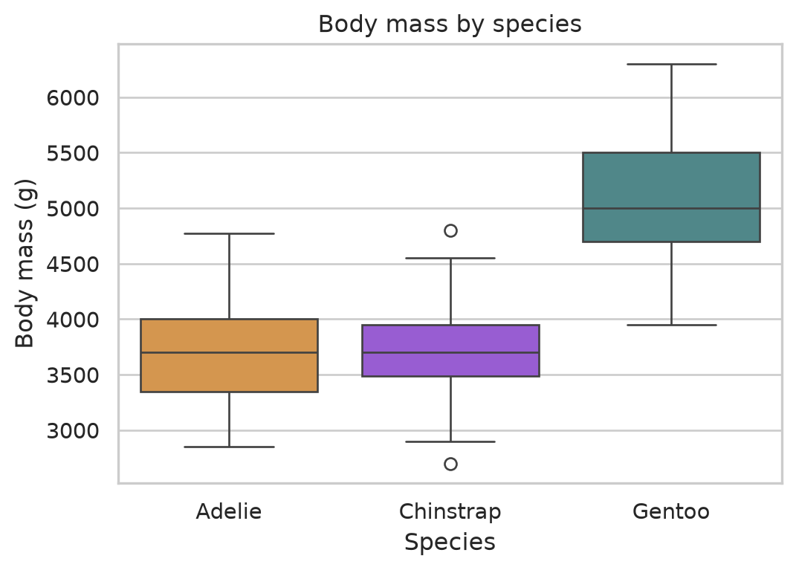
Reading a boxplot
- The line inside the box is the median.
- The box ranges from the first quartile, \(Q_1\) (25% of the data lie below it), to the third quartile, \(Q_3\) (75% lie below it). Each box represents the middle 50% of the data. Its height is the interquartile range, \(\text{IQR} = Q_3 - Q_1\).
- The whiskers indicate a range of values that might not be considered “too extreme”.
- No farther than 1.5 times IQR below \(Q_1\) or above \(Q_3\).
- Any points or dots outside the whiskers are flagged as potential outliers.
We can compute the cutoffs ourselves for one species:
Q1 3350.0
Q3 4000.0
IQR 650.0
LB 2375.0
UB 4975.0
Min 2850.0
Max 4775.0
dtype: float64No Adelie penguin has body mass outside the whisker range, so there are no points or dots shown for that box.
Why do we use 1.5 IQR?
The boxplot is the invention of American statistician John Tukey. He was a vocal advocate for building visualization tools and is credited with the term “bit”.
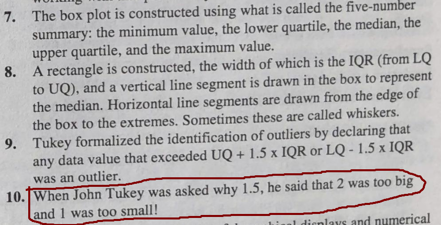
- There are various, well-informed heuristics for identifying outliers. Such rules do not prove a data point is in fact an outlier!
- Tukey’s 1.5 rule is somewhat arbitrary, but it is based on the following facts:
- If data are approximately normal with mean \(0\) and variance \(1\), then \(Q_{1}\) and \(Q_{3}\) correspond to \(-0.6745\) and \(+0.6745\), respectively.
- Thus, you can show that \(\mathrm{IQR}\) is approximately equal to \(2 \times 0.6745 \sigma\) for approximately normal data.
- Any data points that is roughly \(\pm 2.7\) standard deviations away from the mean gets flagged as a potential outlier.
The points flagged by a boxplot should prompt you to examine those data points (e.g. look at the other variables’ values).
matplotlib version
The imperative approach is quite verbose. It is worth seeing this once to appreciate the utility of the seaborn interface:
fig, ax = plt.subplots(figsize=(6, 4))
species_names = list(COLORS)
# Create a list the contains data for each box
data = [penguins.loc[penguins["species"] == s, "body_mass_g"] for s in species_names]
# The list of arrays can be passed to `.boxplot()`.
# What is `patch_artist`? This feature needs to be used so we can edit the display of the median line.
parts = ax.boxplot(data,
tick_labels = species_names,
patch_artist = True,
medianprops = dict(color = "black", linewidth = 2)
)
# This is needed to set the colors of each box... How tedious!
for patch, name in zip(parts["boxes"], species_names):
patch.set_facecolor(COLORS[name])
patch.set_alpha(0.8)
ax.set_xlabel("Species")
ax.set_ylabel("Body mass (g)")
ax.set_title("Body mass by species")
plt.show()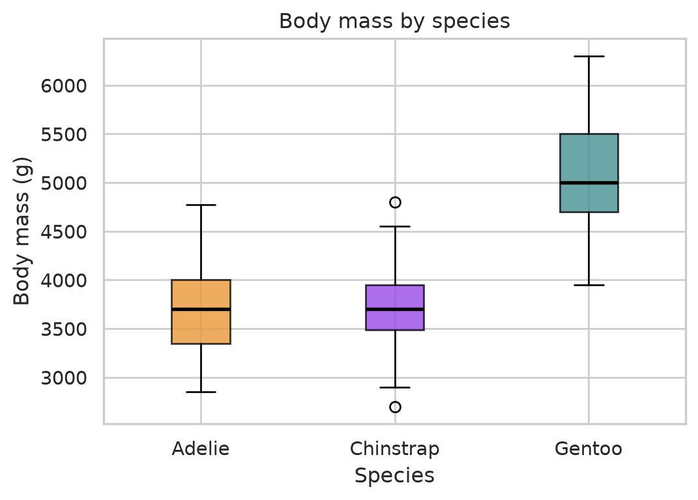
- Examine this figure and compare to the
seabornversion. - What are defaults might
seabornhave set for us? There is at least one visual element that is different.
Scatterplots
A scatterplot displays two numeric variables plotted against each other, one variable per axis. It useful for probing potential relationships, specifically associations, between variables.
The seaborn interface allows you to fit linear trend lines to data.
- This is done via regression, and it is not limited to linear trends.
- We will review simple learning regression later in the course.
- A positive slope indicates a positive correlation. Both variables “move together.”
- A negative slope indicates a negative correlation. The two variables “move in opposite directions.”
matplotlib version
x = penguins["bill_length_mm"]
y = penguins["bill_depth_mm"]
# NumPy's `polyfit` can fit different trend lines
slope, intercept = np.polyfit(x, y, deg = 1)
fig, ax = plt.subplots(figsize=(6, 4))
# DRAW: Scatterplot of data
ax.scatter(x, y, alpha=0.6)
# DRAW: Trend line
xs = np.linspace(x.min(), x.max(), 50)
ax.plot(xs, intercept + slope * xs, color="red", linestyle="--")
ax.set_xlabel("Bill length (mm)")
ax.set_ylabel("Bill depth (mm)")
ax.set_title("All penguins together")
plt.show()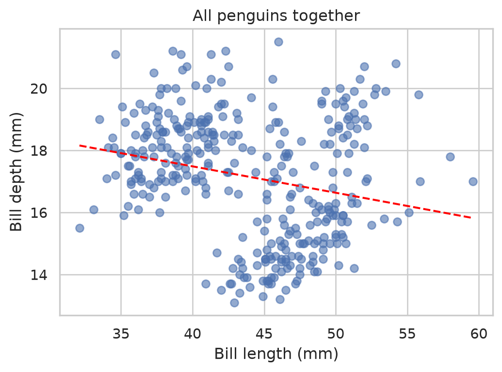
seaborn version
fig, ax = plt.subplots(figsize=(6, 4))
sns.regplot(
data = penguins,
x = "bill_length_mm",
y = "bill_depth_mm",
ci = None, # no confidence band; don't use this blindly!
scatter_kws = {"alpha": 0.6},
line_kws = {"color": "red", "linestyle": "--"},
ax = ax,
)
ax.set_xlabel("Bill length (mm)")
ax.set_ylabel("Bill depth (mm)")
ax.set_title("All penguins together")
plt.show()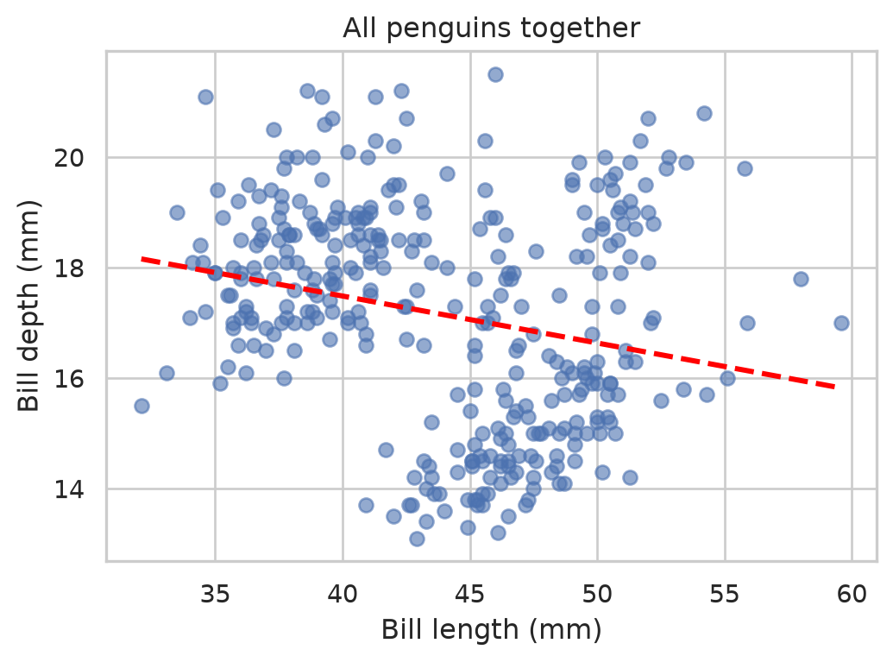
Simpson’s paradox
Observation: Across all penguins in our data, longer bills tend to go with shallower bills, as suggested by our scatterplots. Does this actually happen to individual penguins? Let us add the third variable we have been ignoring.
matplotlib version
We color each point by species and fit separate trend lines:
fig, ax = plt.subplots()
for species, color in COLORS.items():
sub = penguins[penguins["species"] == species]
# DRAW: Scatterplot for particular species
ax.scatter(sub["bill_length_mm"], sub["bill_depth_mm"],
color = color,
alpha = 0.7,
label = species
)
# DRAW: Species-specific trend line
m, b = np.polyfit(sub["bill_length_mm"], sub["bill_depth_mm"], deg = 1)
xs = np.linspace(sub["bill_length_mm"].min(), sub["bill_length_mm"].max(), 50)
ax.plot(xs, b + m * xs, color=color, linewidth=2)
ax.set_xlabel("Bill length (mm)")
ax.set_ylabel("Bill depth (mm)")
ax.set_title("Penguin bill dimensions by species")
ax.legend(title="Species")
plt.show()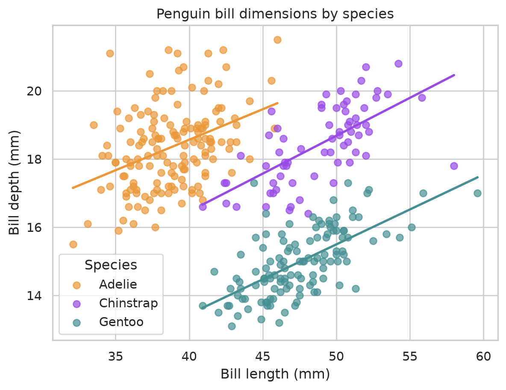
seaborn version
The lmplot function draws a scatterplot with a fitted line for each value of hue:
Why does this happen?
The apparent trend reverses once we include group information! Each penguin species clearly shows a positive correlation between bill depth and bill length. The negative slope in the previous scatterplots came from combining three clusters that sit in different places.
bill_length_mm 43.9
bill_depth_mm 17.2
dtype: float64| bill_length_mm | bill_depth_mm | |
|---|---|---|
| species | ||
| Adelie | 38.8 | 18.3 |
| Chinstrap | 48.8 | 18.4 |
| Gentoo | 47.5 | 15.0 |
The different species differ considerably in both variables.
- Gentoo penguins have long, shallow bills
- Adelie penguins have short, deep bills.
Differences between the groups produced a downward trend when viewing the data without overlaying group structure The relationship within each group, however, clearly has a positive trend.
This is an instance of Simpson’s paradox, which is the phenomenon of reversing or eliminating trends within two variables once a third variable is included.
- The third variable can be categorical or continuous.
- Neither view is “wrong” as far as the mathematics are concerned.
- The way to resolve the apparent paradox is to understand that a statistic, regardless of whether it is a single number of a trend, is inherently a summary about a population, not about individual observations.
- What matters in practice is being clear about which population you are interested in investigating.
Notice that not every relationship reverses. Body mass and flipper length rise together for all penguins and within each species, but the strength differs.
Quick plotting with pandas
pandas data frames have plotting implemented as a method. It is convenient for quick prototyping and exploratory analysis in a REPL. Each call returns a customizable axis object from matplotlib.
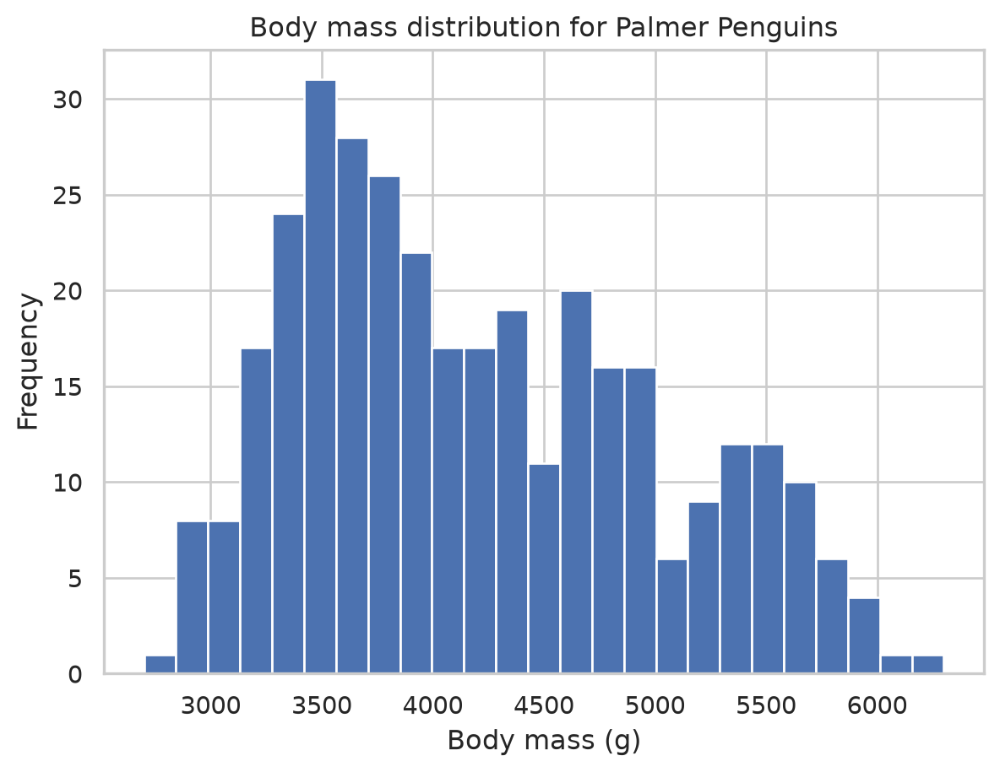
A scatter matrix is useful if you want a quick look of several numeric variables at once. Keep in mind that this is a screening tool:
- It merely suggests relationships and clusters worth a closer look.
- It can be misleading, even if you factor in categorical variables, because it displays data in a pairwise fashion.
numeric_cols = ["bill_length_mm", "bill_depth_mm", "flipper_length_mm", "body_mass_g"]
pd.plotting.scatter_matrix(penguins[numeric_cols],
c = penguins["species"].map(COLORS), # Color each point by its species
diagonal = "hist", # Control the display along the diagonal
alpha = 0.7,
figsize = (8, 8),
)
plt.tight_layout()
plt.show()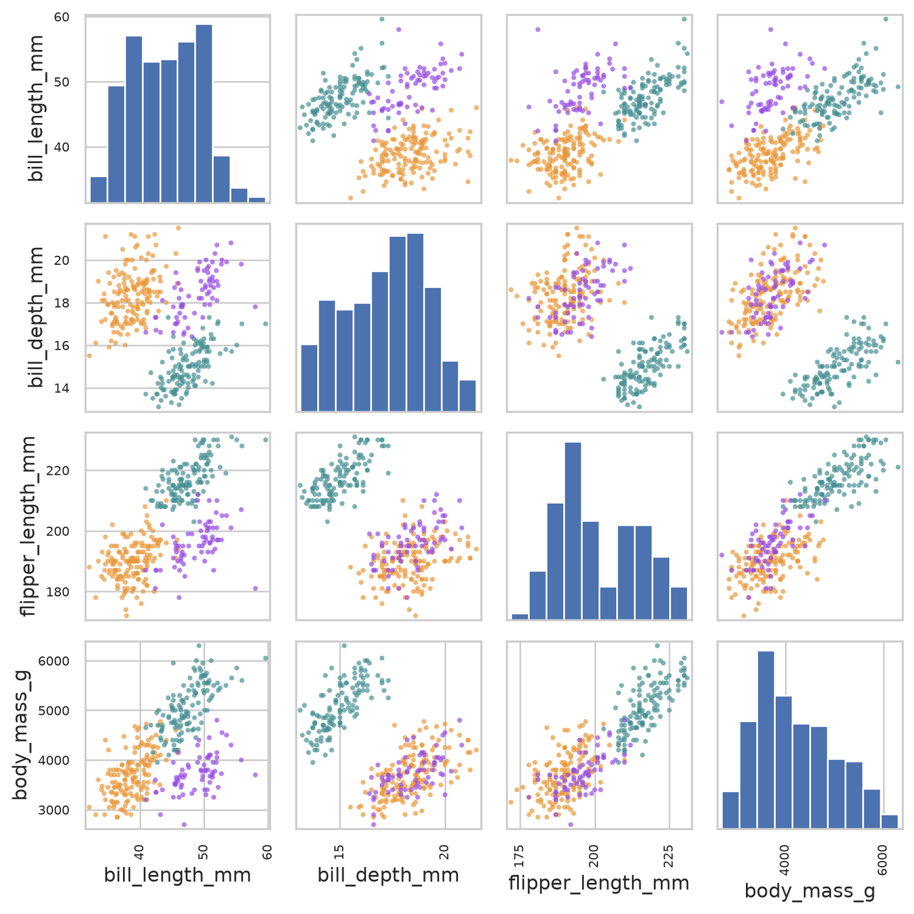
- Might need to adjust
figsizeto correctly display all visual elements. - With \(p\) variables there are \(p^2\) panels, so this is only viable for examining a few variables.
Saving a figure
# Create a directory to store our work; don't do anything if it already exists.
os.makedirs("output", exist_ok = True)
# Use the `.savefig()` method for a `Figure` object
fig.savefig(
os.path.join("output", "bill_scatter.png"),
dpi = 200, # Dots per inch; resolution
bbox_inches = "tight" # Control the bounding box
)Takeaway messages
- Always plot grouped data if the structure is given to you.
- Summaries and correlations over a mixture might not describe any of those groups.
- It is difficult for humans to intuit latent structure from numeric summaries alone. Plots often provide a richer, high-level summary.
- Apparent clusters in your visualizations are rarely an accident.
- Ask what the groups might exist, and whether they might labeled somehow.
- Use visualizations to help guide and sharpen your analysis.
- Use
seabornfor fast exploration andmatplotlibwhen you need to control the details.
Exercises
Exercise 1: One variable
- Make a histogram of
flipper_length_mmwith 30 bins. Describe its shape in one sentence. - Make the same histogram with
seaborn, colored by species. Is this more or less informative?
Exercise 2: Groups
- Make a boxplot of
flipper_length_mmbyisland. - Make a second boxplot of
flipper_length_mmbyspecies. Which grouping better separates the flipper lengths? Why might the island plot be misleading?
Exercise 3: Associations
- Make a scatterplot of
body_mass_g(\(y\)-axis) againstflipper_length_mm(\(x\)-axis), colored by species. Include a trend line for each species. - Does the overall relationship reverse within species, as the bill example did, or only change in strength? Justify your answer by computing correlations using
groupbyon the Pandas data frame. - Which of the three species shows the weakest association?